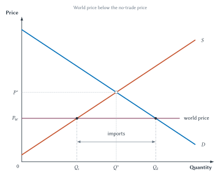
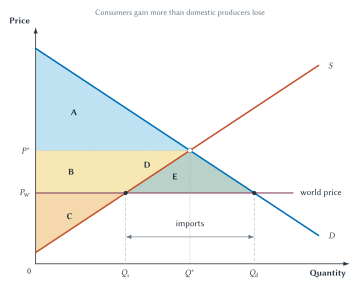
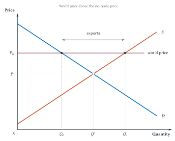
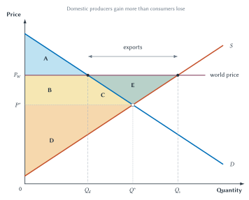
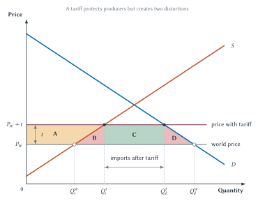

Chapter 9
International Trade and Trade Policy
International trade can increase total surplus while creating real gains, losses, adjustment costs, and conflicts over trade policy.

Walk through a typical home, store, or workplace and international trade is everywhere. A phone may be designed in one country, use components made in several others, and be assembled somewhere else. Coffee may come from Colombia or Brazil. A local farm may sell part of its crop to buyers abroad. Imported goods give consumers lower prices and more choices. Exports give domestic producers access to more customers.
Yet the same trade can hurt particular people. A factory facing new import competition may cut production or close. Workers with skills tied to that factory may have trouble finding equally good jobs. A town that depends heavily on one industry may lose income, businesses, and tax revenue.
Both parts of that story can be true. Trade can increase total economic gains while producing serious losses for particular workers, firms, and communities. The purpose of this chapter is to understand that combination rather than hide one side of it.
The logic begins with Chapter 2. People gain when they specialize according to comparative advantage and trade. National borders do not erase that logic. This chapter adds the supply-and-demand and welfare tools developed since then. Those tools show how trade changes domestic prices, who gains, who loses, and why the gains exceed the losses in the basic competitive model.
We then examine tariffs and quotas. These policies can protect selected domestic producers, but they also raise prices, reduce trade, and create deadweight loss. As in earlier policy chapters, the economic question is not whether a policy has a good-sounding goal. It is whether the policy addresses a real problem better than the available alternatives.
Key Point
Trade Creates Total Gains And Distributional Conflict
Opening to trade can increase total surplus while helping some domestic groups and hurting others. With imports, consumers gain more than domestic producers lose. With exports, producers gain more than domestic consumers lose.
From Comparative Advantage To International Markets
Chapter 2 showed why comparative advantage matters. What counts is not who can produce the most of everything. What counts is who gives up less to produce a particular good.
Suppose one country is more productive than another at making both wheat and computers. It still cannot use the same workers, machines, land, and time for both activities. If its opportunity cost of computers is especially low, it can specialize more in computers, import some wheat, and gain from exchange. The other country can gain by specializing more in wheat even if it has no absolute advantage.1
The basic principle is unchanged when millions of buyers and sellers replace the two-person example. Differences in opportunity cost create possibilities for specialization. Trade allows buyers to obtain goods from lower-cost sources and allows sellers to reach buyers who place higher values on their products.
A country can obtain coffee by growing it or by producing something else and trading for coffee. Trade is another way of producing what consumers want.
International trade is more complicated than exchange between two classmates. Goods must be transported. Buyers and sellers may use different currencies and legal systems. Contracts must be enforced. Customs rules, ports, payment systems, insurance, and political stability affect whether a possible trade actually occurs.
Those complications matter, but they do not replace comparative advantage. They affect the cost and organization of trade. To see the central price and welfare effects clearly, we begin with a simple domestic market and then add complications after the model has done its work.
Historical Note
Economist Profile: David Ricardo
David Ricardo, painted by Thomas Phillips around 1821.2
David Ricardo (1772-1823) developed the famous example that became the foundation for comparative advantage. His lasting insight was that trade does not require one country to be absolutely better at producing a good. Gains depend on differences in opportunity cost.
Modern textbooks explain Ricardo’s insight differently and apply it far beyond his original example. The durable lesson is simple: compare what must be given up, not merely who can produce more.
Comparative advantage explains why trade can create gains. To see how those gains appear in a particular market, we need one new price.
The World Price
Imagine a country that initially does not trade coffee with the rest of the world. Domestic buyers and domestic sellers determine the market equilibrium. Call that price the no-trade price, \(P^*\). It is the price that would prevail in this domestic market without international trade.
Now allow trade. Domestic buyers can purchase from foreign sellers, and domestic sellers can sell to foreign buyers. The price available in the international market is the world price, \(P_W\).
The comparison between those two prices tells us what the country will do:
- If \(P_W<P^*\), the good is cheaper in the world market. The country imports it.
- If \(P_W>P^*\), foreign buyers offer a higher price. The country exports it.
- If \(P_W=P^*\), opening to trade does not change this market in the simple model.
That is the first step in every graph in this chapter. Do not begin by guessing whether a country imports or exports. Compare the world price with the no-trade price.
| Term | Meaning |
|---|---|
| World price | The price available in the international market. |
| No-trade price | The domestic equilibrium price if the country does not trade. |
| Import | A good bought from sellers in another country. |
| Export | A good sold to buyers in another country. |
| Tariff | A tax on imported goods. |
| Quota | A legal limit on the quantity of a good that can be imported. |
| Quota rent | The gain from having the legal right to import under a quota. |
Table 9.1. The basic language of international trade. Begin by comparing the world price with the price that would prevail without trade.
The Small-Country Benchmark
Our diagrams treat the country as small compared with the world market. That does not mean the country is geographically small or unimportant. It means its purchases and sales are not large enough to change the world price of the good.
Domestic buyers and sellers can trade as much as they want at \(P_W\). The world price therefore appears as a horizontal line. The country accepts that price because its own purchases and sales are too small to move the much larger world market.
This small-country benchmark also assumes that the domestic market is competitive, transportation and other trade costs are omitted, and no externality or information problem changes the welfare comparison. These assumptions let us isolate the price and quantity effects of trade. We will return to what they leave out.
Sideline
The Small-Country Diagram Is A Benchmark
The model assumes that this country cannot change the world price and that its domestic market is competitive. The diagram does not measure transportation costs, worker displacement, regional decline, retaliation, national-security concerns, pollution, or foreign welfare. It gives us a clear starting point, not the last word on every trade policy.
With the benchmark established, begin with the more familiar case: consumers buying an imported good at a lower price.
Imports: A World Price Below The No-Trade Price
Suppose the world price of coffee is below the price that would prevail if domestic buyers could purchase only from domestic sellers.
Before trade, domestic demand and supply intersect at \(P^*\) and \(Q^*\). Once trade opens, domestic buyers can purchase coffee at the lower world price \(P_W\). Domestic sellers cannot continue charging \(P^*\) for the same good when coffee is available from abroad for less. The domestic price falls to the world price.
The lower price changes both sides of the market:
- Domestic consumers increase their quantity demanded from \(Q^*\) to \(Q_d\).
- Domestic producers reduce their quantity supplied from \(Q^*\) to \(Q_s\).
- Imports fill the difference between what domestic consumers buy and domestic producers sell.
\[ \text{Imports}=Q_d-Q_s \]
Figure 9.1. A world price below the no-trade price creates imports. At the lower price, domestic consumers buy more, domestic producers sell less, and imports equal \(Q_d-Q_s\).
Imports do not replace all domestic production. Domestic firms still supply \(Q_s\) because producing those units costs less than the world price. Imports replace the higher-cost domestic units between \(Q_s\) and \(Q^*\) and provide the additional units consumers purchase between \(Q^*\) and \(Q_d\).
This is why saying “imports destroy domestic production” is too broad. Imports reduce production in the import-competing industry, but domestic producers remain active when their costs are low enough. Resources released from higher-cost production can eventually move toward other uses, although that adjustment may be slow and costly.
The quantity diagram identifies the market changes. The next diagram asks how the gains and losses compare.
The Gains And Losses From Imports
The lower price helps domestic consumers. They pay less on units they would have bought anyway, and they purchase additional units whose value exceeds the world price.
The lower price hurts domestic producers. They receive less on the units they continue to sell, and they stop producing units whose domestic cost exceeds the world price.
Figure 9.2 uses letters so the transfer between groups can be separated from the new gains created by trade.

Figure 9.2. Consumers gain more than domestic producers lose. Areas \(B+D\) move from producers to consumers, while area \(E\) is the net gain from imports.
Before trade:
- Consumer surplus is \(A\).
- Producer surplus is \(B+C+D\).
- Total surplus is \(A+B+C+D\).
After trade:
- Consumer surplus is \(A+B+D+E\).
- Producer surplus is \(C\).
- Total surplus is \(A+B+C+D+E\).
Domestic producers lose \(B+D\). Domestic consumers gain \(B+D+E\). Areas \(B+D\) are not a net gain for the country. They are transferred from domestic producers to domestic consumers through the lower price. Area \(E\) is the net increase in domestic total surplus.
The new gain has two parts even though the figure gives them one letter. On the production side, imports replace domestic units that cost more to produce than the world price. On the consumption side, the lower price allows additional purchases whose value to buyers exceeds the world cost.
The model therefore supports two statements at once:
- Import competition hurts domestic producers in this industry.
- The gain to domestic consumers is larger than the producer loss.
That second statement is a total-surplus result. It does not say that displaced workers are immediately compensated or that every family gains.
Common Mistake
Imports Are Not A National Loss
Imports are goods and services residents receive through exchange. Exports are part of what residents supply in return. The important questions are how trade changes prices and opportunities, who gains, who loses, and how costly adjustment will be.
Imports can also create gains the diagram does not fully show. Access to foreign sellers may give consumers more varieties, qualities, and product combinations. Research by Christian Broda and David Weinstein found that the expansion of imported varieties was an important source of consumer gains in the United States.3 The basic graph measures lower prices and additional quantity for one broadly defined good. It does not capture every gain from having more choices.
Imports reverse the direction of the price change for domestic producers and consumers. Exports use the same model with the world price on the other side of the no-trade price.
Exports: A World Price Above The No-Trade Price
Suppose foreign buyers are willing to pay more for a domestic crop than buyers at home would pay without trade. Once trade opens, domestic producers can sell at the higher world price. Domestic buyers must compete with those foreign buyers, so the domestic price rises to \(P_W\).
At the higher price:
- Domestic consumers reduce quantity demanded from \(Q^*\) to \(Q_d\).
- Domestic producers increase quantity supplied from \(Q^*\) to \(Q_s\).
- The difference is sold to foreign buyers.
\[ \text{Exports}=Q_s-Q_d \]

Figure 9.3. A world price above the no-trade price creates exports. At the higher price, domestic producers sell more, domestic consumers buy less, and exports equal \(Q_s-Q_d\).
Exports are not simply extra production added without domestic consequences. The higher world price also raises the price paid by domestic consumers. Some domestic consumption is redirected to foreign buyers, and producers expand output because more units are now worth producing.
The welfare effects therefore reverse the identities of the winners and losers.
The Gains And Losses From Exports
Domestic producers gain from the higher price and the opportunity to sell more. Domestic consumers lose because they pay more and purchase less.

Figure 9.4. Domestic producers gain more than domestic consumers lose. Areas \(B+C\) move from consumers to producers, while area \(E\) is the net gain from exports.
Before trade:
- Consumer surplus is \(A+B+C\).
- Producer surplus is \(D\).
- Total surplus is \(A+B+C+D\).
After trade:
- Consumer surplus is \(A\).
- Producer surplus is \(B+C+D+E\).
- Total surplus is \(A+B+C+D+E\).
Domestic consumers lose \(B+C\). Domestic producers gain \(B+C+E\). Areas \(B+C\) are transferred from consumers to producers through the higher domestic price. Area \(E\) is the net increase in total surplus.
The gain again comes from directing resources toward higher-valued uses. Units between \(Q^*\) and \(Q_s\) cost less to produce than foreign buyers are willing to pay. Trade makes those additional gains possible.
The import and export cases can now be summarized without memorizing every area letter.
| Case | Domestic Price | Domestic Winners | Domestic Losers | Total Surplus |
|---|---|---|---|---|
| Imports | Falls to the world price. | Consumers. | Producers in the import-competing industry. | Rises. |
| Exports | Rises to the world price. | Producers in the exporting industry. | Domestic consumers of the good. | Rises. |
Table 9.2. Trade creates gains and losses within a country. The domestic group that benefits depends on whether trade lowers or raises the price, but total surplus rises in both benchmark cases.
The table also explains why trade politics can be intense. A national gain does not arrive as equal checks mailed to every household. Some groups receive large, visible losses while gains may be spread across millions of consumers.
When A National Gain Hits A Particular Place
The supply-and-demand model shows what happens after resources adjust: lower-cost sources expand, higher-cost uses contract, and total surplus rises. Real people and places do not move instantly from one use to another.
A worker may have spent twenty years learning the equipment and routines of one factory. A new job may require different skills or a move away from family. A home may lose value when a major employer closes. Local restaurants and stores may lose customers. The town’s tax base may shrink. These costs can last much longer than the phrase “resources move to other industries” suggests.
Case Study
When A Trade Gain Hits A Particular Place
David Autor, David Dorn, and Gordon Hanson studied U.S. local labor markets that differed in their exposure to growing Chinese import competition from 1990 to 2007. Areas that began with more employment in industries exposed to Chinese imports experienced larger losses in manufacturing employment, lower labor-force participation, higher unemployment, and lower wages. Government transfer payments also rose more in those areas.4
The evidence does not show that all trade with China made the United States poorer. The study was not a complete national accounting of consumer gains, export gains, or lower input costs. It shows something different and important: local adjustment can be concentrated, persistent, and painful.
That creates a policy question. Should the response restrict trade for the entire country, or should it help workers and communities adjust more directly? A tariff may protect some jobs, but it also raises prices, protects firms that may not need help, invites lobbying, and may provoke retaliation. Training, relocation assistance, income support, and place-based policies have their own limits, but they target adjustment more directly.
Taking adjustment costs seriously does not require abandoning the gains-from-trade model. It requires stating clearly what the model measures and what it leaves out. Total surplus, distribution, and transition are different questions.
The same distinction mattered in Chapters 6 through 8. A policy can change the size of the economic pie, the way it is divided, and the cost of moving from one outcome to another. Good analysis keeps those effects separate before reaching a conclusion.
Trade restrictions are often proposed to protect groups facing these losses. The most common restriction is a tariff.
Tariffs: A Tax On Imports
A tariff is a tax on an imported good. The legal payment is collected when the good enters the country, but the economic effects spread through the domestic market.
In the small-country model, a tariff on foreign goods is paid through higher prices faced by domestic buyers.
Begin with an importing country. Without the tariff, the domestic price equals \(P_W\). A per-unit tariff of \(t\) raises the price of imported units to \(P_W+t\). Domestic sellers can also charge the higher price because buyers would otherwise have to pay that amount for the imported version.
The higher domestic price creates several responses:
- Domestic producers increase quantity supplied.
- Domestic consumers reduce quantity demanded.
- Imports fall.
- Domestic producers gain surplus.
- Domestic consumers lose surplus.
- The government receives tariff revenue.
- Some gains from trade disappear.
This is the Chapter 7 tax logic applied to imports. The tariff creates a wedge between the world cost and the domestic price.

Figure 9.5. A tariff protects producers but creates two distortions. Consumers lose \(A+B+C+D\), producers gain \(A\), government revenue is \(C\), and deadweight loss is \(B+D\).
The lettered accounting is:
- Consumer surplus falls by \(A+B+C+D\).
- Producer surplus rises by \(A\).
- Government tariff revenue is \(C\).
- Deadweight loss is \(B+D\).
Area \(C\) is not deadweight loss. It is revenue transferred to the government. Whether that revenue is used well is a separate question, but someone still receives it.
The two deadweight-loss triangles arise for different reasons.
Production distortion, area \(B\). The tariff expands domestic production by making buyers pay enough to support units that cost more to produce at home than to buy abroad. Protection replaces lower-cost foreign production with higher-cost domestic production.
Consumption distortion, area \(D\). The tariff’s higher price prevents some purchases even though buyers value those units more than their world cost.
These are the same two ways trade originally created gains: replacing high-cost domestic production and expanding consumption. A tariff partially reverses both gains.
Key Point
A Tariff Does More Than Reduce Imports
A tariff raises the domestic price, expands domestic production, reduces domestic consumption, shrinks imports, transfers surplus to producers and government, and creates deadweight loss.
Washing Machines And Unexpected Responses
The 2018 U.S. tariffs on washing machines provide a useful example because firms and prices adjusted in ways the simple graph does not display.
Aaron Flaaen, Ali Hortacsu, and Felix Tintelnot found that washer prices rose by about 12 percent. Dryer prices rose by a similar amount even though dryers were not covered by the tariff. Washers and dryers are often purchased together, so sellers could change the price of the pair rather than only the taxed item. Foreign producers also shifted some production to the United States.5
The researchers estimated about 1,800 additional jobs and an annual consumer cost of roughly $815,000 for each job created. That number is not the wage paid to a worker. It compares the estimated consumer cost of the policy with the estimated employment increase.
The case does not prove that every tariff has the same effects. It shows why policy analysis must follow all the ways firms and consumers can respond. A tariff intended to protect one product can change complementary prices, plant locations, supply chains, investment, and lobbying.
Import Quotas And Quota Rents
A tariff limits imports indirectly by raising their price. An import quota limits them directly by setting a maximum quantity.
Suppose a quota allows only a fixed number of imported cars. If buyers want more imported cars than the quota permits at the world price, the domestic price rises until quantity demanded and domestic supply leave exactly the allowed number of imports.
The price and quantity effects can look much like those of an equivalent tariff:
- domestic price rises
- domestic production rises
- domestic consumption falls
- imports fall
- domestic producers gain
- domestic consumers lose
- deadweight loss appears through production and consumption distortions
The main institutional difference is the revenue-like rectangle. A tariff sends that money to the government. A quota creates quota rents, the gains earned by whoever holds the legal right to import.
If the government auctions import licenses, it may collect the rents much like tariff revenue. If licenses are given to domestic firms, those firms receive the rents. If foreign exporters obtain the valuable rights, the rents may leave the country. The assignment of licenses therefore matters.
| Feature | Tariff | Quota |
|---|---|---|
| Policy | Tax on imports. | Quantity limit on imports. |
| Domestic price | Rises. | Rises. |
| Imports | Fall. | Limited directly. |
| Domestic producers | Gain. | Gain. |
| Domestic consumers | Lose. | Lose. |
| Revenue or rents | Government receives tariff revenue. | License holders receive quota rents unless licenses are auctioned. |
| Additional concern | Retaliation and lobbying. | Rent-seeking and license allocation. |
Table 9.3. Tariffs and quotas can produce similar market effects but different payments. A tariff normally creates government revenue; a quota creates valuable import rights whose recipient depends on the rules.
Quotas also create an incentive for rent-seeking. Firms may spend money, time, and political effort trying to obtain the valuable licenses. Those resources could have been used elsewhere. The cost of fighting over the right to import can therefore add to the basic welfare losses in the graph.
Tariffs and quotas have clear costs in the small-country model. That does not mean every argument for limiting trade is meaningless. It means the argument must identify a problem strong enough to justify those costs.
Arguments For Restricting Trade
Trade debates are often conducted through slogans: protect jobs, defend national security, stop unfair trade, or let consumers buy freely. Economic reasoning turns each slogan into a question that can be investigated.
| Argument | Why It Matters | Economic Question |
|---|---|---|
| Jobs | Import competition can hurt workers in affected industries. | Is restricting trade the best way to help those workers, or would direct adjustment assistance cost less? |
| Infant industry | A new industry may need time to learn and reach an efficient scale. | Is there a real obstacle that private investors cannot handle, and will protection actually end? |
| National security | Some goods may be essential during war or a major emergency. | Is the security need specific and credible, and is broad protection necessary? |
| Unfair trade | Foreign subsidies or broken rules may distort competition. | What is the exact practice, and does the response correct it or mainly protect domestic firms? |
| Bargaining power | A tariff may be used to seek concessions from another country. | Are better terms likely, or will the policy bring retaliation and uncertainty? |
| Community stability | A trade shock can harm a town tied to one industry. | Is trade restriction better than aid directed to the affected workers and place? |
| Revenue | Tariffs provide government revenue. | Is that revenue worth higher prices, reduced trade, and deadweight loss? |
Table 9.4. Arguments for trade restrictions are claims to test. A valid concern does not automatically establish that a tariff or quota is the best response.
Jobs And Communities
Imports can reduce employment in import-competing industries. The China-shock evidence makes clear that those losses can be large in particular places. But saving a job in one protected industry is not the same as creating a net job for the economy.
Creating jobs is not the same as creating value. Workers and capital drawn into protected production are unavailable for other uses.
Tariffs raise costs for consumers and for domestic firms that use imported inputs. Other countries may retaliate against exporters. Workers and spending can shift between industries. The washing-machine case also shows that the consumer cost per job can be high.
The serious policy question is how to help people bear adjustment costs. Protection may sometimes slow a change, but it also delays movement toward lower-cost production and distributes help according to what a person buys or produces rather than according to need.
Infant Industries
The infant-industry argument says a young domestic industry may eventually become competitive but cannot survive its early learning period without temporary protection.
The argument can make economic sense when firms create knowledge that others can copy or when financial markets fail to support a genuinely valuable new activity. But it faces practical problems. Government must identify future winners before the market has revealed them. Protected firms have weak incentives to admit when support is no longer needed. A temporary tariff can become permanent after firms and workers organize to preserve it.
The test is not whether the industry is young. It is whether a specific problem prevents a promising industry from financing its own learning and whether a tariff is better than a more direct policy.
National Security
National security can be a legitimate reason to avoid complete dependence on foreign sources. A country may value domestic capacity for weapons, medicines, energy equipment, computer chips, or other supplies needed during a crisis.
The words national security, however, are not enough. The claim should identify the threat, the critical product, the likely disruption, and the capacity that must be maintained. If domestic capacity is the security goal, government can purchase that capacity directly through a targeted stockpile, purchase contract, supplier-diversification rule, or production subsidy rather than make every buyer support the industry through higher prices.
Unfair Trade And Bargaining
Foreign governments may subsidize firms, restrict market access, or violate agreements. Those practices can justify negotiation, dispute procedures, or a targeted response. But “unfair” can also become a label domestic firms attach to ordinary competition.
Likewise, a large country may sometimes use market access as bargaining power. That possibility lies outside the small-country model because a large country may affect world prices. Yet retaliation can reduce the expected gain. The policy must be judged by the actual bargaining result, not by the threat alone.
The general lesson is the same as in Chapter 8: identify the problem, trace the responses, and compare the proposed rule with realistic alternatives.
Why Protection Is Politically Durable
If trade restrictions usually reduce total surplus in the benchmark model, why are they so common?
The distribution of gains and losses provides part of the answer. A protected firm may gain millions of dollars from a tariff. Its owners and workers have a strong reason to organize, lobby, and follow the policy closely. The same tariff may cost each consumer only a small amount on an occasional purchase. Consumers have less reason to learn about the rule or organize against it.
| Political Feature | Trade-Policy Effect |
|---|---|
| Concentrated benefits | Protected firms and workers may gain a large amount per person. |
| Dispersed costs | Higher prices may be spread across millions of consumers. |
| Organization | Producers often organize more easily than consumers. |
| Visibility | A factory closing is visible; small price increases across many goods are harder to see. |
| Rent-seeking | Firms may spend resources seeking tariffs, quotas, or import licenses. |
Table 9.5. Political incentives can favor protection. A policy can survive because its supporters gain visibly and organize effectively even when its total cost exceeds its total benefit.
This does not prove that every tariff exists only because of political influence. Security, bargaining, or adjustment concerns may be genuine. Public-choice reasoning adds one more question: who has the strongest incentive to shape the rule?
It also explains why compensation promised in theory may not happen in practice. Economists can show that total gains are large enough for winners to compensate losers. That does not mean the winners will voluntarily write the checks or that the political system will deliver effective help.
Trade needs institutions not only to assist adjustment, but also to make international agreements credible.
From Smoot-Hawley To GATT And The WTO
International trade does not operate outside rules. Governments set tariffs, recognize contracts, inspect goods, control ports, negotiate agreements, and decide how disputes will be handled.
The Smoot-Hawley tariff of 1930 became a cautionary example. The United States raised tariffs across many products during a severe downturn, and trading partners retaliated.6 Smoot-Hawley did not single-handedly cause the Great Depression, but it illustrated how protection in one country can invite protection elsewhere and shrink opportunities for exchange.
After World War II, governments built a more predictable system for reducing trade barriers through repeated negotiation.
Historical Note
From Smoot-Hawley To GATT And The WTO
| Period Or Institution | Teaching Point |
|---|---|
| High-tariff era | Trade policy was more openly protectionist and tariffs were often much higher. |
| Smoot-Hawley, 1930 | U.S. tariff increases became a warning about protection and retaliation. |
| GATT, 1947 | Twenty-three countries created an agreement and forum for reciprocal tariff reductions. |
| Negotiating rounds | Countries lowered barriers through repeated bargaining rather than unilateral promises. |
| WTO, 1995 | The World Trade Organization replaced the looser GATT arrangement with a broader organization and dispute rules. |
| Continuing importance | Trade rules shape expectations, bargaining, investment, and political conflict. |
Table 9.6. Lower trade barriers were built through institutions. The postwar system made tariff reductions reciprocal and gave governments rules for handling disputes.
The General Agreement on Tariffs and Trade, or GATT, began with 23 contracting parties after the 1947 negotiations. It provided rules and a forum for rounds of tariff reductions. The World Trade Organization began in 1995 after the Uruguay Round and broadened the institutional framework.7
These institutions did not eliminate trade disputes or guarantee free trade. They made commitments more predictable and gave governments a place to negotiate and challenge alleged rule violations. That predictability can support investment and exchange even when political conflict remains.
The history reinforces a broader theme of this book. Markets do not require a central planner to direct every transaction, but they do require rules that help people form expectations, make agreements, and resolve disputes. International trade scales that institutional problem across borders.
The Big Picture
International trade extends the gains-from-exchange logic of Chapter 2. Comparative advantage creates the opportunity. The world price tells domestic buyers and sellers how their opportunities compare with those elsewhere.
When the world price is below the no-trade price, a country imports. Domestic consumers gain, domestic producers lose, and consumers gain more in the competitive small-country benchmark. When the world price is above the no-trade price, a country exports. Domestic producers gain, domestic consumers lose, and producers gain more.
Those total gains do not erase distributional conflict or adjustment costs. A worker, firm, or town can suffer a large and lasting loss even when the country’s total surplus rises. A serious defense of trade should acknowledge those losses and ask how they can be addressed without giving up more gains than necessary.
Tariffs and quotas protect selected producers by raising domestic prices and reducing trade. Their costs are not mysterious. Consumers lose, production moves toward higher-cost domestic sources, some worthwhile purchases disappear, and political effort may be spent seeking protection. A strong case for restriction therefore needs more than a slogan. It needs a specific problem and a showing that the restriction is better than the alternatives.
Trade is neither a contest in which exports are points scored nor a promise that every person wins. It is a system of exchange that can create large gains, distribute them unevenly, and depend on institutions that make cooperation across borders possible.
Chapter Study Map
The Core Chain
- Find the domestic no-trade equilibrium price, \(P^*\).
- Compare the world price, \(P_W\), with \(P^*\).
- If \(P_W<P^*\), identify imports as \(Q_d-Q_s\).
- If \(P_W>P^*\), identify exports as \(Q_s-Q_d\).
- Name the domestic winners and losers created by the price change.
- Separate transfers between groups from the net gain in total surplus.
- For a tariff, trace domestic price, production, consumption, imports, revenue, and deadweight loss.
- Add adjustment costs and other real-world effects that the benchmark leaves out.
- Evaluate a restriction by comparing its goal, full effects, and feasible alternatives.
Ideas To Know
- Comparative advantage: the ability to produce at a lower opportunity cost.
- No-trade price: the domestic equilibrium price without international trade.
- World price: the price available in the international market.
- Small-country benchmark: a model in which the country cannot change the world price.
- Import: a good purchased from sellers abroad.
- Export: a good sold to buyers abroad.
- Tariff: a tax on imports.
- Quota: a legal limit on import quantity.
- Quota rent: the gain earned by whoever holds the right to import under a quota.
- Trade adjustment cost: the cost workers, firms, and communities bear while resources move between uses.
- Protectionism: government policy intended to limit foreign competition.
- Retaliation: another country’s restrictive response to a trade policy.
- Rent-seeking: spending resources to obtain a valuable government-created benefit.
Figure Guide
- Figure 9.1: If \(P_W<P^*\), domestic consumption rises, domestic production falls, and the gap is imports.
- Figure 9.2: With imports, consumers gain \(B+D+E\), producers lose \(B+D\), and total surplus rises by \(E\).
- Figure 9.3: If \(P_W>P^*\), domestic production rises, domestic consumption falls, and the gap is exports.
- Figure 9.4: With exports, producers gain \(B+C+E\), consumers lose \(B+C\), and total surplus rises by \(E\).
- Figure 9.5: A tariff raises domestic price, reduces imports, generates revenue \(C\), and creates deadweight loss \(B+D\).
Common Errors
- Looking at absolute advantage instead of comparative advantage.
- Deciding whether a country imports or exports before comparing \(P_W\) with \(P^*\).
- Treating imports as losses and exports as gains without considering what is received and given up.
- Saying trade benefits everyone because total surplus rises.
- Saying producer or consumer losses prove that total surplus falls.
- Treating tariff revenue as deadweight loss.
- Saying a tariff only reduces imports while ignoring domestic production and consumption.
- Assuming quota rents automatically go to the government.
- Assuming a valid concern proves that a tariff is the best response.
- Using a bilateral trade deficit as a scoreboard for which country won.
Review Questions
- What is comparative advantage?
- What is the no-trade price?
- What is the world price?
- What does the small-country assumption mean?
- When does a country import a good?
- When does a country export a good?
- How are imports calculated from domestic quantities?
- How are exports calculated from domestic quantities?
- Who gains and who loses when a country opens to imports?
- Who gains and who loses when a country opens to exports?
- In Figure 9.2, which areas are transferred from producers to consumers and which area is the net gain?
- In Figure 9.4, which areas are transferred from consumers to producers and which area is the net gain?
- Why can national gains from trade coexist with persistent regional losses?
- Define a tariff.
- What five market outcomes should be traced after a tariff is imposed?
- In Figure 9.5, what do areas \(A\), \(C\), and \(B+D\) represent?
- What is the difference between tariff revenue and quota rent?
- Why can quotas encourage rent-seeking?
- Under what conditions might national security provide a legitimate reason for trade policy?
- Why can concentrated benefits and dispersed costs make protection politically durable?
- What was GATT, and how did the WTO differ from it?
- Why is the small-country diagram a benchmark rather than a complete verdict on every trade policy?
Economic Reasoning Questions
- The no-trade price of a good is $30 and the world price is $18. Will the country import or export? Explain before calculating anything.
- At the world price, domestic firms supply 400 units and domestic consumers demand 900 units. Calculate trade volume and identify whether it is imports or exports.
- The world price of a crop is above its domestic no-trade price. Trace the effects on domestic price, production, consumption, producers, and consumers.
- In Figure 9.2, a student says producers lose \(B+D\), so the country loses \(B+D\). What transfer has the student missed?
- In Figure 9.4, why does the higher domestic price not imply that opening to exports reduces total surplus?
- A trade agreement lowers the price of imported shoes. Name one gain and one cost that the basic import graph shows, then name one possible adjustment cost it does not show.
- A tariff raises domestic quantity supplied from 200 to 280 and lowers domestic quantity demanded from 700 to 600. By how much do imports fall?
- A tariff collects $5 on each of 320 imported units. Calculate tariff revenue. Explain why that revenue is not deadweight loss.
- A quota produces the same domestic price and import quantity as a tariff. What additional information is needed to know who receives the quota rents?
- A town loses a major employer after import competition increases. Explain why this loss can be real even if national total surplus rises. Compare a tariff with one more targeted response.
- A company argues that its product is essential for national security. What facts would you want before supporting protection?
- A new industry requests a ten-year tariff so it can become competitive. Apply the infant-industry questions from Table 9.4.
- A tariff protects steel producers but raises costs for domestic firms that use steel. Explain why counting only jobs in steel gives an incomplete policy analysis.
- Protected firms each expect large gains from a tariff, while millions of consumers each expect a small loss. Use Table 9.5 to predict which side is more likely to organize.
- Someone says, “The country imports more from another nation than it exports there, so it is losing.” Explain why that statement does not follow from this chapter’s model.